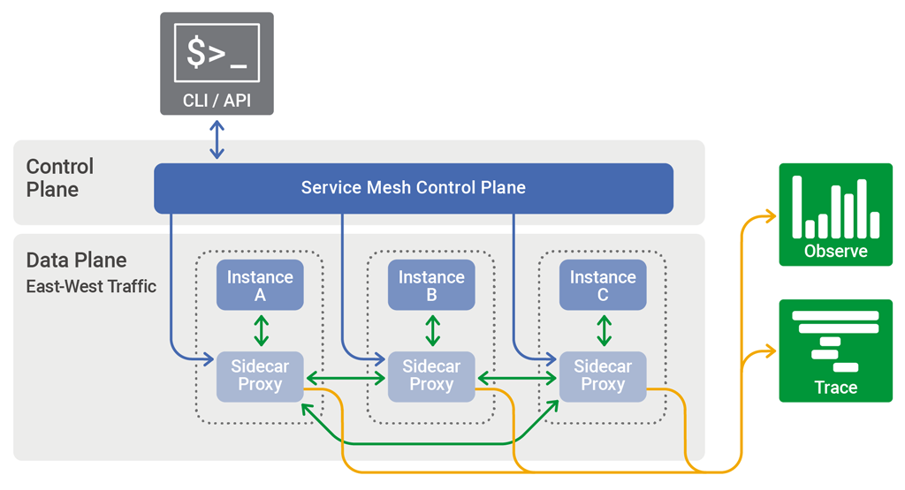
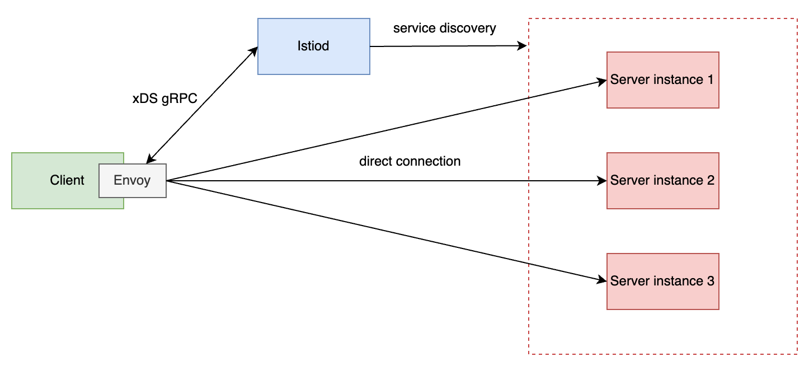
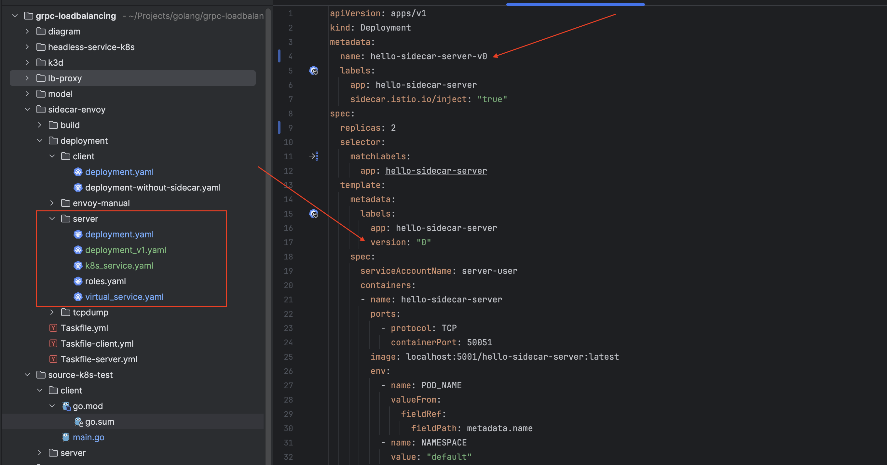
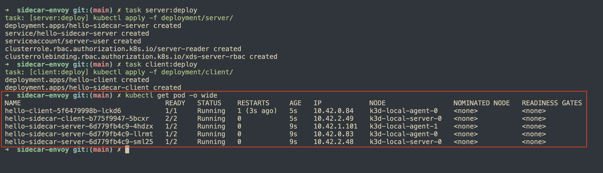
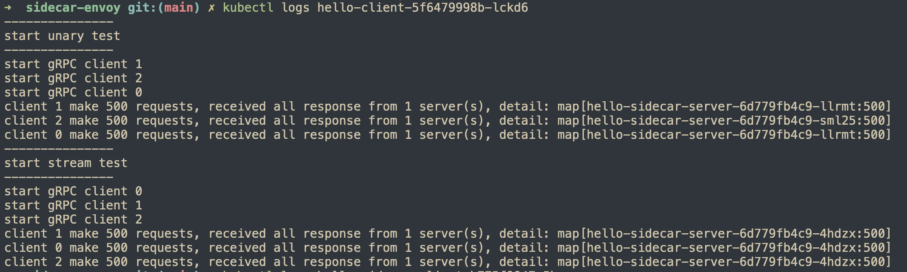
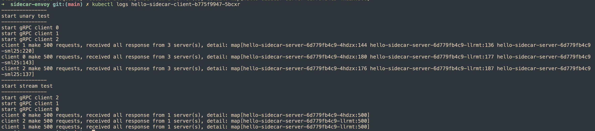
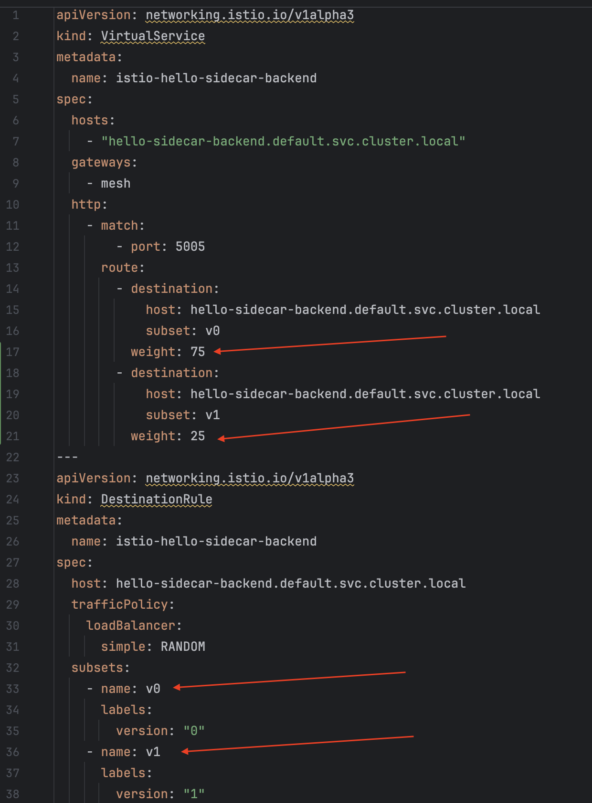
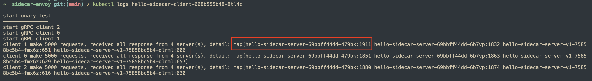

gRPC Load balancing (4) - Service mesh
Bài viết phân tích kĩ thuật cân bằng tải gRPC.
Tiếp theo với chuỗi bài tìm hiểu gRPC load balancing, bài viết hôm nay thảo luận về việc sử dụng service mesh để cân bằng tải gRPC trong k8s. Chủ đề chính vẫn là gRPC load balancing nên những kiến thức khác mình chỉ lướt qua ở mức vừa đủ để các bạn có thể theo dõi bài viết.
Service mesh
Service mesh là gì?
Service mesh là công cụ tạo ra một lớp hạ tầng xử lý việc giao tiếp giữa các service trong ứng dụng, có một số tính năng nổi bật như:
- Service discovery
- Load balancing
- mTLS
- Observability
- Traceability
giúp tách rời những chức năng không liên quan đến xử lý business ra khỏi phần code của ứng dụng.
Kiến trúc của 1 service mesh:

Như bạn có thể thấy, có 2 thành phần chính trong service mesh:
Control plane: chịu trách nhiệm điều khiển, cấu hình các rule để quản lý mesh.Data plane: hiện thực các rule từcontrol plane, xử lý quá trình giao tiếp giữa các service trong mesh bằngsidecar proxy, thành phần được triển khai cùng với service.
Service mesh trong K8s
Mình sử dụng Isito - Envoy proxy để hiện thực trong bài viết này.
Isito là một công cụ triển khai service mesh, chúng ta có thể triển khai trên K8s hoặc cụm máy ảo.
Control plane: Istiod.Data plane:Envoy proxyđược triển khai cùng với service trong cùng một pod,proxynhư một lớp bọc ở ngoài service, chặn và xử lý tất cả in-bound, out-bound traffic của service để hiện thực các chức năng liên quan đến giao tiếp.
Mô hình hoạt động cân bằng tải gRPC như sau:

Istiodsẽ đóng vai tròservice discoveryvà cập nhật choenvoy proxykhi có sự thay đổi ở backend server như scale-out, scale-in.Envoy proxysẽ cân bằng tảigRPCởlayer 7sau khi tạo connection trực tiếp tới các backend servers.
kube-proxy
Để có sự so sánh tại sao chúng ta cần dùng một công cụ ngoài k8s để cân bằng tải, hãy cùng phân tích qua những thành phần sẵn có của k8s.
Pod (đơn vị triển khai của k8s, luận lý, bao gồm 1 hoặc nhiều container chia sẻ cùng network namespace) sinh ra là để chết đi :v, bản chất nó chỉ là tạm thời, mỗi lần được tạo mới, pod lại được k8s gán một địa chỉ IP khác, nếu sử dụng trực tiếp địa chỉ IP trong giao tiếp giữa các pod hay các dịch vụ bên ngoài, việc địa chỉ IP thay đổi liên tục có thể là 1 vấn đề (tạm gọi chung là các vấn đề về service discovery). Để giải quyết, k8s cung cấp khái niệm service, tạo ra một điểm đi vào duy nhất cho các request từ phía client.
Service trong K8s sử dụng kube-proxy để thực hiện việc giao tiếp network, kube-proxy sử dụng iptables để điều chuyển các gói tin từ client đến pod đang chạy server, hoạt động ở layer 4, ở vai trò này nó giống như một load balancing proxy hoạt động ở layer 4, và các vấn đề của proxy layer 4 thì mình đã phân tích ở các bài trước.
Hiện thực / Kiểm tra
Để hiện thực mô hình này, mình sử dụng những thứ sau:
- k3d: chạy k8s ở máy tính cá nhân.
- kubectl: tương tác với cụm k8s.
- istio & envoy-proxy: triển khai service mesh trong k8s.
- task: làm alias cho các công việc như build hay triển khai, giúp tiết kiện thời gian gõ lệnh trên terminal.
Server
Phần code của server đơn giản chỉ có 2 method unary và stream, trả về pod name mỗi khi xử lý request nhằm mục đích thống kê ở phía client.
Mình trích dẫn 2 method gRPC ở đây:
SayHello: unary method của gRPC.SayHelloStream: stream method của gRPC.
func (s *server) SayHello(ctx context.Context, req *pb.HelloRequest) (*pb.HelloResponse, error) {
fmt.Printf("server %v receive message\n", s.serverId)
return &pb.HelloResponse{ServerId: s.serverId}, nil
}
func (s *server) SayHelloStream(stream pb.DemoService_SayHelloStreamServer) error {
for {
_, err := stream.Recv()
if err != nil {
return fmt.Errorf("failed to receive a request: %v", err)
}
fmt.Printf("server %v receive message\n", s.serverId)
// Send a response back to the client
res := &pb.HelloResponse{
ServerId: s.serverId,
}
// Send the response to the client
if err := stream.Send(res); err != nil {
return fmt.Errorf("failed to send response: %v", err)
}
}
}
Để triển khai server trong k8s, chúng ta cần:
- Build code thành docker image:
localhost:5001/hello-sidecar-server:latest. - Viết file triển khai
Deploymentvà mộtServicecho các pod của servers.
Ở đây mình chuẩn bị 2 file Deployment, mục đích là triển khai server với 2 version khác nhau.

Client
Ở client lần này mình cũng sử dụng 2 method unary và stream để kiểm tra cách cân bằng tải bằng envoy proxy và kube-proxy.
Về ý tưởng kiểm tra:
- Tạo nhiều client, mỗi client gửi nhiều request đối với
unary methodvà nhiều stream đối vớistream method. - Thống kê số lượng request được xử lý bởi mỗi server.
unary test
func unaryTest(index int, wg *sync.WaitGroup) {
defer wg.Done()
target := getTarget()
conn, err := grpc.NewClient(target, grpc.WithTransportCredentials(insecure.NewCredentials()))
if err != nil {
log.Fatalf("connect to server %v fail: %v", target, err)
}
defer func() {
_ = conn.Close()
}()
client := pb.NewDemoServiceClient(conn)
responses := make(map[string]int)
fmt.Printf("start gRPC client %v\n", index)
for i := 0; i < numberOfRequests; i++ {
res, err := client.SayHello(context.Background(), &pb.HelloRequest{Name: "client"})
if err != nil {
log.Printf("client %v failed to call SayHello: %v", index, err)
continue
}
responses[res.ServerId] = responses[res.ServerId] + 1
time.Sleep(requestInterval)
}
fmt.Printf("client %v make %v requests, received all response from %v server(s), detail: %+v\n", index, numberOfRequests, len(responses), responses)
}
stream test
func streamTest(index int, wg *sync.WaitGroup) {
defer wg.Done()
target := getTarget()
conn, err := grpc.NewClient(target, grpc.WithTransportCredentials(insecure.NewCredentials()))
if err != nil {
log.Fatalf("connect to server %v fail: %v", target, err)
}
defer func() {
_ = conn.Close()
}()
client := pb.NewDemoServiceClient(conn)
responses := make(map[string]int)
fmt.Printf("start gRPC client %v\n", index)
stream, err := client.SayHelloStream(context.Background())
if err != nil {
log.Fatalf("could not call SayHello: %v", err)
}
for i := 0; i < numberOfRequests; i++ {
req := &pb.HelloRequest{
Name: fmt.Sprintf("client %d", i),
}
if err := stream.Send(req); err != nil {
log.Fatalf("failed to send request: %v", err)
}
response, err := stream.Recv()
if err != nil {
log.Fatalf("failed to receive response: %v", err)
}
responses[response.ServerId] = responses[response.ServerId] + 1
}
if err := stream.CloseSend(); err != nil {
log.Fatalf("failed to close stream: %v", err)
}
fmt.Printf("client %v make %v requests, received all response from %v server(s), detail: %+v\n", index, numberOfRequests, len(responses), responses)
}
Triển khai 2 phiên bản client bằng k8s có sử dụng envoy proxy và không sử dụng envoy proxy, có một số điểm lưu ý sau:
sidecar.istio.io/inject: "false": ngăn chặnistiodinject sidecar proxy vào pod của client.hello-sidecar-backend.default.svc.cluster.local: endpoint của service backend.- các thông số về số lượng gRPC client, số request hay số stream mỗi gRPC client có thể được thay đổi ở file
Deployment.
Ví dụ file Deployment yaml triển khai client có envoy proxy.
apiVersion: apps/v1
kind: Deployment
metadata:
name: hello-sidecar-client
labels:
app: hello-sidecar-client
spec:
replicas: 1
selector:
matchLabels:
app: hello-sidecar-client
template:
metadata:
labels:
app: hello-sidecar-client
spec:
containers:
- name: hello-sidecar-client
image: localhost:5001/hello-sidecar-client:latest
env:
- name: POD_NAME
valueFrom:
fieldRef:
fieldPath: metadata.name
- name: NAMESPACE
value: "default"
- name: GRPC_SERVER_ADDR
value: "hello-sidecar-backend.default.svc.cluster.local"
- name: GRPC_SERVER_PORT
value: "5005"
- name: CLIENT_CONNECTION
value: "3"
- name: STREAMER_PER_CONNECTION
value: "10"
- name: REQUEST_PER_CLIENT
value: "5000"
resources:
limits:
cpu: "200m"
memory: "250Mi"
requests:
cpu: "100m"
memory: "100Mi"
File yaml triển khai client không có envoy proxy chỉ khác phần annotations.
spec:
replicas: 1
selector:
matchLabels:
app: hello-client
template:
metadata:
labels:
app: hello-client
annotations:
sidecar.istio.io/inject: "false"
Kiểm tra
Triển khai server và client bằng lệnh task server:deploy và task client:deploy.

kube-proxy
kube-proxy cân bằng tải ở layer 4 nên tất cả request từ 1 client sẽ được xử lý bởi 1 backend server duy nhất.

envoy-proxy
Envoy proxycân bằng tải ởlayer 7nên khi kiểm tra vớiunary method, requests từ 1 client có thể được xử lý bởi cả 3 backend servers.- Đối với
stream method, tất cả RPCs trên 1 stream đều được xử lý bởi 1 backend server duy nhất, chứng minh rằng envoy hiểu được gRPC protocol.

Traffic management
Trong lúc giới thiệu về service mesh, mình có đề cập đến 1 vai trò hàng đầu của nó là hỗ trợ, quản lý giao tiếp giữa services. Phần này mình sẽ phát triển thêm ví dụ ở phần trước để minh hoạ thêm yếu tố quản lý traffic giữa các service.
Khi ứng dụng của bạn triển khai một tính năng mới, hay cập nhật tính năng cũ và bạn chỉ muốn triển khai đến một nhóm nhỏ người dùng, bạn có thể sử dụng các cấu hình routing để thực hiện việc này bằng cách:
- Sử dụng label để phân biệt các phiên bản mới của server.
- Cấu hình routing để thay đổi tỉ lệ traffic đến phiên bản cũ và mới.
Để minh hoạ ví dụ này, mình sử dụng thêm 2 thành phần của Istio là VirtualService và DestinationRule:
VirtualService: định nghĩa cách request được gửi tới một địa chỉ.DestinationRule: định nghĩa cách request được gửi đến các pod sau khi được áp dụng chính sách routing từVirtualService, bạn có thể hiểu có 2 bậc routing ở đây.

Tỉ lệ giữa 2 phiên bản của server là 3:1.
Để chạy chương trình, chúng ta chỉ cần chạy task server:deploy và task client:deploy sau khi đã cập nhật các file yaml.
Kết quả cho thấy đúng với chúng ta kì vọng, tỉ lệ request được xử lý bởi 2 phiên bản của server gần bằng 3:1.

Đánh giá
Mình chỉ tập trung đánh giá ưu/nhược điểm liên quan đến tính năng cân bằng tải.
Ưu điểm
- Service mesh cung cấp cơ chế cân bằng tải ở tầng ứng dụng, giải quyết được vấn đề cân bằng tải connection của
kube-proxy. - Cung cấp cơ chế
service discovery. - Hỗ trợ đa dạng các chế độ cân bằng tải, phù hợp với các ứng dụng triển khai phức tạp.
Nhược điểm
- Tăng độ phức tạp trong các mô hình triển khai.
- Thêm 1 lớp vào việc giao tiếp giữa các service, tăng latency của request cũng như khó debug khi có lỗi xảy ra.
Tổng kết
Qua bài viết này, mình đã hiện thực service mesh trong K8s để cân bằng tải gRPC cũng như kiểm tra lại các lý thuyết đã được phân tích ở các bài viết trước. Một số kiến thức quan trọng cần lưu ý:
- Mô hình hoạt động của service mesh, side-car pattern.
Kube-proxyhoạt động cân bằng tải ởL4.Envoy proxyhoạt động cân bằng tải ởL7.Istio và Envoy proxyhỗ trợ đa dạng các cấu hình quản lý traffic.
Mã nguồn
Bạn có thể tham khảo mã nguồn ở repository grpc-loadblancing.
Tham khảo
- Istio
- Istio in Action by Christian E. Posta and Rinor Maloku.